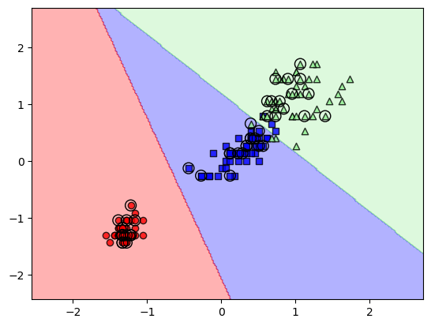

from sklearn import datasets
import numpy as np
iris = datasets.load_iris()
X = iris.data[:, [2,3]]
y = iris.targetScikit-Learn
使用sklearn 训练模型
介绍
有监督的机器学习算法涉及5个主要步骤:
- 特征选择和标注训练样本的收集
- 选择Performance Metrics
- 选择学习算法并训练模型
- 对模型性能进行评估
- 更改算法的设置并调整模型
训练一个感知器模型
使用scikit-learn自带的iris数据集训练一个感知器模型
np.unique(y)array([0, 1, 2])np.unique(y)方法返回3个唯一的label, 也就是Iris 的三个类别: Iris-setosa, Iris-versicolor, Iris-virginica
使用model_selection的train_test_split方法分隔测试集和验证集
from sklearn.model_selection import train_test_split
X_train, X_test, y_train, y_test = train_test_split(X, y, test_size=0.3, random_state=1, stratify=y)
Note
在分隔前，train_test_split函数内部已经对数据进行了shuffle。
通过stratify=y配置，可以保证训练集和测试集有相同比例的label，可以通过Numpy的np.bincount函数进行验证
np.bincount(y), np.bincount(y_train), np.bincount(y_test)(array([50, 50, 50]), array([35, 35, 35]), array([15, 15, 15]))许多机器学习和优化算法要求对特征进行归一化，以获得最佳性能, scikit-learn使用preprocessing的StandardScaler类来完成这个操作
from sklearn.preprocessing import StandardScaler
sc = StandardScaler()
sc.fit(X_train)
X_train_std = sc.transform(X_train)
X_test_std = sc.transform(X_test)训练数据标准化后，我们就可以开始训练感知器模型。Scikit-learn的大多数算法都通过one-versus-rest(OvR)支持多分类, 这种方法允许我们将三个花类输入给模型
from sklearn.linear_model import Perceptron
ppn = Perceptron(eta0=0.1, random_state=1)
ppn.fit(X_train_std, y_train)Perceptron(eta0=0.1, random_state=1)In a Jupyter environment, please rerun this cell to show the HTML representation or trust the notebook.
On GitHub, the HTML representation is unable to render, please try loading this page with nbviewer.org.
Perceptron(eta0=0.1, random_state=1)
训练完模型后，使用predict方法进行预测
y_pred = ppn.predict(X_test_std)
print('MIsclassified examples: %d' % (y_test != y_pred).sum())MIsclassified examples: 1可以看出模型的错误率只有1/45,约等于0.022. scikit-learn也有自己的精度计算函数accuracy_score
from sklearn.metrics import accuracy_score
print(f'Accuracy: {accuracy_score(y_test, y_pred):.3f}')Accuracy: 0.978展示决策模型, 参见图: Figure 1
from matplotlib.colors import ListedColormap
import matplotlib.pyplot as plt
def plot_decision_regions(X, y, classifier, test_idx=None,
resolution=0.02):
# setup marker generator and color map
markers = ('o', 's', '^', 'v', '<')
colors = ('red', 'blue', 'lightgreen', 'gray', 'cyan')
cmap = ListedColormap(colors[:len(np.unique(y))])
# plot the decision surface
x1_min, x1_max = X[:, 0].min() - 1, X[:, 0].max() + 1
x2_min, x2_max = X[:, 1].min() - 1, X[:, 1].max() + 1
xx1, xx2 = np.meshgrid(np.arange(x1_min, x1_max, resolution),
np.arange(x2_min, x2_max, resolution))
lab = classifier.predict(np.array([xx1.ravel(), xx2.ravel()]).T)
lab = lab.reshape(xx1.shape)
plt.contourf(xx1, xx2, lab, alpha=0.3, cmap=cmap)
plt.xlim(xx1.min(), xx1.max())
plt.ylim(xx2.min(), xx2.max())
# plot class examples
for idx, cl in enumerate(np.unique(y)):
plt.scatter(x=X[y == cl, 0],
y=X[y == cl, 1],
alpha=0.8,
c=colors[idx],
marker=markers[idx],
label=f'Class {cl}',
edgecolor='black')
# highlight test examples
if test_idx:
# plot all examples
X_test, y_test = X[test_idx, :], y[test_idx]
plt.scatter(X_test[:, 0], X_test[:, 1],
c='none', edgecolor='black', alpha=1.0,
linewidth=1, marker='o',
s=100, label='Test set')
X_combined_std = np.vstack((X_train_std, X_test_std))
y_combined = np.hstack((y_train, y_test))
plot_decision_regions(X=X_combined_std,
y=y_combined,
classifier=ppn,
test_idx=range(105, 150))
plt.xlabel('Petal length [standardized]')
plt.ylabel('Petal width [standardized]')
plt.legend(loc='upper left')
plt.tight_layout()
plt.show()基于逻辑回归的模型
当我们的数据不能进行完美的线性分隔时，感知器模型就不能很好的工作了。 因此我们需要逻辑回归模型
Logistic regression and conditional probabillities
逻辑回归是一个非常容易实现的分类模型，并且在线性分隔时执行得很好。 它是工业界最广泛使用的分类模型之一。
首先，先来看看激活函数Sigmoid的图形，参见： Figure 2
import matplotlib.pylab as plt
import numpy as np
def sigmoid(z):
return 1.0 / (1.0 + np.exp(-z))
z = np.arange(-7, 7, 0.1)
sigma_z = sigmoid(z)
plt.plot(z, sigma_z)
plt.axvline(0.0, color='k')
plt.ylim(-0.1, 1.1)
plt.xlabel('z')
plt.ylabel('$\sigma (z)$')
plt.yticks([0.0, 0.5, 1.0])
ax = plt.gca()
ax.yaxis.grid(True)
plt.tight_layout()
plt.show()模型训练
scikit-learn 有两类回归模型，LogisticRegression和LinearRegression。 它们在功能和适用场景上有所不同。 逻辑回归只适用于二分类模型，所以只能使用0,1类别的数据
- LinearRegression（线性回归）: 用于建立线性回归模型，用于预测一个或多个连续数值型目标变量。
- LogisticRegression（逻辑回归）：用于建立逻辑回归模型，用于预测二分类或多分类问题。它使用逻辑函数（如sigmoid函数）将线性回归的输出映射到概率值，并根据阈值进行分类
from sklearn.linear_model import LogisticRegression
lr = LogisticRegression(C=100.0, solver='lbfgs',multi_class='ovr')
lr.fit(X_train_std, y_train)LogisticRegression(C=100.0, multi_class='ovr')In a Jupyter environment, please rerun this cell to show the HTML representation or trust the notebook.
On GitHub, the HTML representation is unable to render, please try loading this page with nbviewer.org.
LogisticRegression(C=100.0, multi_class='ovr')
看一下预测结果，参见: Figure 3
plot_decision_regions(X_combined_std,
y_combined,
classifier=lr,
test_idx=range(105, 150))
plt.xlabel('Petal length [standardized]')
plt.ylabel('Petal width [standardized]')
plt.legend(loc='upper left')
plt.tight_layout()
plt.show()
如果想看每个分类的预测概率，可以使用predict_proba
lr.predict_proba(X_test_std[:3, :])array([[3.81527885e-09, 1.44792866e-01, 8.55207131e-01],
[8.34020679e-01, 1.65979321e-01, 3.25737138e-13],
[8.48831425e-01, 1.51168575e-01, 2.62277619e-14]])上面每一行的3个数代表每个分类的概率，所有的概率想加为1
lr.predict_proba(X_test_std[:3, :]).sum(axis=1)array([1., 1., 1.])使用argmax函数来获取最大概率的列索引
lr.predict_proba(X_test_std[:3, :]).argmax(axis=1)array([2, 0, 0])上面的代码和直接调用predict相同
lr.predict(X_test_std[:3, :])array([2, 0, 0])模型优化技巧
交叉验证(Cross-Validation)
使用不同的数据作为验证集，当满足如下情况时，可以考虑使用这个方法 * 对于小数据量的情况，额外的训练工作消耗资源不多